정보통신기사(구) (2011-06-12 기출문제)
1과목: 디지털 전자회로
1. 다음과 같은 회로의 출력(Vo)은?
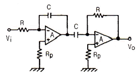
- 0
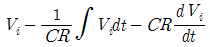
- Vi
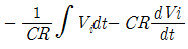
(정답률: 76%)

2. 다음 중 접합 트랜지스터에 대한 설명으로 틀린 것은?
- 포화는 컬렉터 전류가 최대에 달하는 현상이다.
- 베이스는 트랜지스터의 한 영역으로 컬렉터, 이미터의 폭보다 넓다.
- 차단(cut off)은 트랜지스터가 도통되지 않은 상태를 말한다.
- 컬렉터는 바이폴러 접합 트랜지스터의 반도체 영역 중 하나이다.
(정답률: 77%)
3. 아래 그림의 시미트 트리거 회로에 대한 설명으로 틀린 것은?
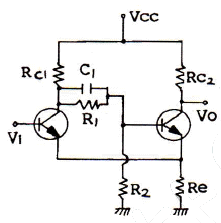
- 출력에 2개의 안정 상태를 갖는 회로이다.
- 펄스 파형을 만드는 회로에는 적합하지 못하다.
- 궤환 효과는 공통 이미터 저항을 통하여 이루어진다.
- 입력 전압의 크기가 출력의 상태를 결정하여 준다.
(정답률: 62%)
4. 다음 중 배타적 OR(Exclusive OR) 회로의 논리식으로 틀린 것은?
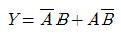
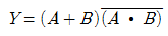
- A ⊕ B
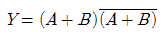
(정답률: 67%)
5. 개루프 전압이득이 40[dB]인 저주파 증폭기에서 비직선 일그러짐이 10[%]일 때, 이것을 1[%]로 개선하기 위한 부궤환 증폭기의 전압궤환율 β는?
- 1/40
- 9/100
- 9/1000
- 11/1000
(정답률: 73%)
6. 다음 중 적분회로의 역할을 하는 것은?
- 저역통과 RC 회로
- 고역통과 RC 회로
- 대역통과 RC 회로
- 대역소거 RC 회로
(정답률: 72%)
7. 6개의 플립플롭으로 구성된 2진 리플계수기에서 최대계수 값은?
- 512
- 128
- 64
- 63
(정답률: 59%)
8. 다음 그림의 회로는?
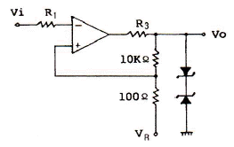
- 클램프 회로
- 차동증폭 회로
- 슬라이서 회로
- 시미트 트리거 회로
(정답률: 67%)
9. 그림과 같은 검파회로에 AM 반송파의 진폭이 3[V], 변조도 60[%]의 전압이 가해졌을 때 검파효율 η=0.8일 경우 RL 양단에 나타나는 출력전압(Vo)의 교류분 실효치는?
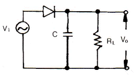
- 약 0.7[V]
- 약 1.02[V]
- 약 1.25[V]
- 약 1.44[V]
(정답률: 58%)
10. 비안정 멀티바이브레이터에 대한 설명으로 틀린 것은?
- 출력 파형에 많은 고조파가 포함되어 있다.
- 발진주파수는 회로의 시정수에 의해서 결정된다.
- 동작전압 범위 내에서 전원 전압의 변동은 발진주파수에 큰 영향을 주지 않는다.
- 두 개의 안정된 상태를 갖는다.
(정답률: 76%)
11. 그림과 같은 AM 변조 회로의 변조방식은?
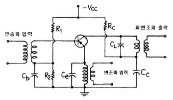
- 이미터 변조
- 베이스 변조
- 컬렉터 변조
- 이미터-베이스 변조
(정답률: 70%)
12. 그림의 회로에서 D가 이상적인 다이오드인 경우
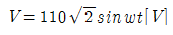
의 입력전압을 가할 때, 출력전압 Vo의 평균전압은 약 얼마인가?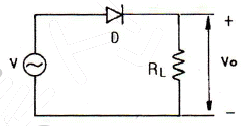
- 155.5[V]
- 100.5[V]
- 90.5[V]
- 49.5[V]
(정답률: 62%)
13. 그림의 회로에서 출력전압 Vo는 입력전압 Vs와 어떤 관계가 있는가?
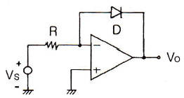
- Vo는 Vs의 R배로 증폭된다.
- Vo는 Vs의 지수로 나타난다.
- Vo는 Vs의 역수에 비례한다.
- Vo는 Vs의 자연대수에 비례한다.
(정답률: 67%)
14. 진폭변조(AM)에서 신호파
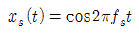
이고, 반송파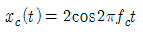
로 주어질 때 변조도는?- 20[%]
- 50[%]
- 80[%]
- 100[%]
(정답률: 74%)
15. 다음 중 L, C, R 직렬공진 회로의 Q는? (단, wr는 공진 각속도)
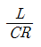
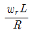
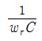
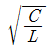
(정답률: 61%)
16. 그림과 같은 증폭기의 동작점(Q)에서 전류 ICQ와 VCEQ는? (단, TR의 VBE=0.7[V], IC=IE로 간주한다.)
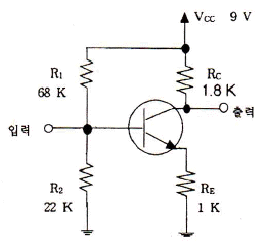
- ICQ = 1.0[mA], VCEQ = 4.5[V]
- ICQ = 1.5[mA], VEQ = 4.8[V]
- ICQ = 1.8[mA], VCEQ = 4.2[V]
- ICQ = 2.0[mA], VCEQ = 5.0[V]
(정답률: 68%)
17. 14핀 TTL IC에서 2개의 단자는 +전원과 접지로 사용된다. 이 IC에 넣을 수 있는 인버터의 최대 개수는?
- 3개
- 4개
- 5개
- 6개
(정답률: 56%)
18. 다음 카르노맵을 논리식으로 간략화한 것은?
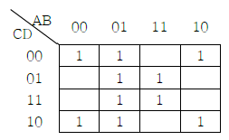
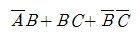
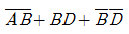
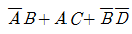
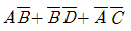
(정답률: 70%)
19. 미분회로에 삼각파를 입력했을 때 나타나는 출력파형은?
- 정현파
- 톱니파
- 삼각파
- 구형파
(정답률: 64%)
20. 다음 중 정류회로의 특성 파라미터와 거리가 먼 것은?
- 맥동율
- 정류 효율
- 전원저항 변동률
- 전압 변동률
(정답률: 60%)
2과목: 정보통신 시스템
21. 다음 중 동화상, 고속데이터 등 광대역 서비스를 처리할 수 있는 광대역 ISDN 교환기에 적합한 교환방식은?
- ATM 방식
- TDM 방식
- FDM 방식
- EDI 방식
(정답률: 67%)
22. 통화 신호레벨이 -10[dB], 잡음레벨이 -55[dB]일 때 신호대잡음비(S/N)비는?
- -10[dB]
- -45[dB]
- 45[dB]
- 65[dB]
(정답률: 66%)
23. ISO의 OSI 및 IBM의 SNA 등을 무엇이라고 하는가?
- 프로토콜 프로그램
- 네트워크 아키텍처
- 네트워크 인터페이스
- 네트워크 관리
(정답률: 81%)
24. TV 신호의 수직귀선소거 기간 동안을 이용하여 문자나 도형 등을 전송하는 방식은?
- 비디오텍스
- 데이터 방송
- 텔레텍스트
- 팩시밀리 방송
(정답률: 68%)
25. 다음 중 TDM 다중화에 대한 설명과 거리가 먼 것은?
- 정적인 연결방식을 사용한다.
- 저속의 부채널 속도의 합계가 고속의 채널 속도와 같다.
- 직렬전송을 하는 장비에 적용할 수 있다.
- 이동통신과 위성통신에 주로 이용한다.
(정답률: 48%)
26. 셀룰러 이동통신에서 원근 문제(near-far problem)를 해결하는데 적용하는 방식은?
- 광증폭기 적용
- 전력제어 적용
- 등화기 적용
- 감쇠기 적용
(정답률: 43%)
27. 시스템의 평균고장간격이 94시간이고, 평균수리시간이 6시간인 경우 가동률(%)은?
- 60
- 94
- 95
- 97
(정답률: 81%)
28. 광섬유 케이블에서 레일리(Rayleigh) 산란손실과 파장과의 관계가 옳은 것은?
- 손실은 파장의 2승에 반비례한다.
- 손실은 파장의 2승에 비례한다.
- 손실은 파장의 4승에 반비례한다.
- 손실은 파장의 4승에 비례한다.
(정답률: 65%)
29. 다음 중 LAN의 분류 방법에 해당되지 않는 것은?
- 토폴로지에 의한 분류
- 전송매체에 의한 분류
- 매체접근 방법에 의한 분류
- OSI 참조모델에 의한 분류
(정답률: 66%)
30. HDLC의 프레임 구조의 순서가 옳은 것은? (단, F : 플래그, A : 주소부, C : 제어부, I : 정보부, FCS : 플래그 검사 시퀀스)
- F - A - C - I - FCS - F
- F - I - C - A - FCS - F
- F - A - I - C - FCS - F
- F - I - A - C - FCS - F
(정답률: 79%)
31. X.25 프로토콜의 링크레벨에서 적용되는 프로토콜은?
- LAP-B
- ADCCP
- BSC
- SDLC
(정답률: 63%)
32. 다음 중 인터넷 응용 서비스에 해당되지 않는 것은?
- TELNET
- FTP
- WWW
(정답률: 72%)
33. 셀룰러 이동전화 시스템에서 PSTN과 이동통신망 간의 인터페이스 역할을 담당하는 것은?
- VLR
- HLR
- BS
- NTSO
(정답률: 46%)
34. ATM 통신은 셀(cell) 단위로 통신이 이루어지는데, 셀은 몇 바이트로 구성되는가?
- 24
- 48
- 51
- 53
(정답률: 65%)
35. 다음 중 회선교환 방식에 대한 설명으로 틀린 것은?
- 전송 중 항상 일정한 경로를 사용한다.
- 정보의 연속적인 전송이 가능하다.
- 빠른 응답시간이 요구되는 응용에는 적합하지 않다.
- 길이가 긴 연속적인 정보전송에 적합하다.
(정답률: 58%)
36. OSI-7 Layer 중 데이터링크 계층의 기능과 거리가 먼 것은?
- 오류 제어
- text의 압축, 암호화
- flow 제어
- 프레임의 순서제어
(정답률: 74%)
37. 다음 중 100Base-T 방식에서 사용하는 매체접속제어는?
- FDDI
- CSMA/CD
- MAP
- Token ring
(정답률: 60%)
38. ITU-T에서 권고하고 있는 No.7 신호방식에 대한 설명으로 적합하지 않은 것은?
- 여러 가지 선로 및 망관리 정보를 공통의 한 채널로 전송한다.
- 공통 신호채널에서 음성을 비롯한 데이터 신호도 함께 전송한다.
- 디지털 통신망에서 음성 및 비음성 교환기간 신호기능을 수행한다.
- 신규서비스가 개발될 때마다 새로운 신호 절차를 쉽게 부가할 수 있다.
(정답률: 44%)
39. 동기식 디지털 계위에서 STM-1의 속도[Mbps]는?
- 51.840
- 155.520
- 546.992
- 622.080
(정답률: 75%)
40. 다음 중 계층화된 통신 구조를 통한 데이터 전송시 상위계층에서 하위계층으로 데이터를 전달 할 때 필요한 정보를 부가하는 과정은?
- Fragmentation
- Multiplexing
- Encapsulation
- Sequencing
(정답률: 79%)
3과목: 정보통신 기기
41. 위성통신을 해하기 위한 통신위성방식이 아닌 것은?
- 이동 위성방식
- 정지 위성방식
- 위상 위성방식
- Random 위성방식
(정답률: 54%)
42. 아날로그 지상파 TV에서 NTSC 방식의 주사선수는?
- 4⑤개
- 525개
- 625개
- 819개
(정답률: 75%)
43. 다음 설명에 해당되는 단말의 표시장치는?
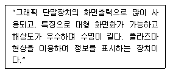
- LCD
- CRT
- PDP
- EC
(정답률: 72%)
44. 광통신시스템에서 광합파기 및 광분배기를 사용하는 광다중 접속방식은?
- TDM
- WDM
- ADM
- FDM
(정답률: 86%)
45. 다음 중 메시지 처리 시스템(MHS)의 구성 요소가 아닌 것은?
- MS(Message Store)
- UA(User Agent)
- AU(Access Unit)
- MH(Message Host)
(정답률: 78%)
46. 다음 중 위성에 장착하는 안테나와 거리가 먼 것은?
- 파라볼라 안테나
- 혼 안테나
- 애드콕 안테나
- 헬리컬 안테나
(정답률: 62%)
47. 푸시 버트 전화기에서 숫자 버튼 기능의 주파수가 옳은 것은?
- 1 : 697[Hz]+1633[Hz]
- 5 : 941[Hz]+1336[Hz]
- 9 : 852[Hz]+1477[Hz]
- 0 : 770[Hz]+1336[Hz]
(정답률: 78%)
48. 다음 중 모뎀(Modem)의 고려사항과 거리가 먼 것은?
- 변조방식
- 동기방법
- 다중화방식
- 등화회로
(정답률: 49%)
49. ISP(Internet Service Provider)에서 사용자 이름과 암호를 일괄 관리하기 위한 프로토콜은?
- DNS(Domain Name Service)
- PPP(Point to Point Protocol)
- RADIUS(Remote Authentication Dial-In User Server)
- SNMP(Simple Network Management Protocol)
(정답률: 60%)
50. 다음 중 슈퍼헤테로다인 수신기의 설명으로 틀린 것은?
- 수신기의 이득을 크게 할 수 있다.
- 특정 주파수의 선택도를 크게 할 수 있다.
- AGC를 채용하여 수신기의 출력 변동이 크다.
- 고충실도를 얻을 수 있다.
(정답률: 67%)
51. 디지털 셀룰러 방식에서 페이딩에 의한 군집성 오류(Burst Error)를 극복하기 위하여 오류정정부호와 함께 사용하는 기술은?
- 변조 기술
- 인터리빙 기술
- 다중화 기술
- 핸드오프 기술
(정답률: 81%)
52. 모뎀이나 신호의 스펙트럼이 채널의 대역폭 내에 가능한 넓게 분포하도록 하여 수신측에서 등화기가 최적의 상태를 유지하도록 하는 기능을 하는 것은?
- 변조기
- 복조기
- 스크램블러
- 증폭기
(정답률: 81%)
53. ATM 교환시스템의 주요 특징에 대한 설명으로 틀린 것은?
- 서비스특성 및 대역폭에 상관없이 수용이 가능함으로 새로운 서비스 수용이 가능하다.
- 기존의 다양한 종류의 망을 하나의 멀티미디어 통합형으로 구성할 수 있으므로 효율적인 망운영이 가능하다.
- 사용하는 정보의 형태나 양에 따라 요금체계를 다양화 할 수 있다.
- 동기식 다중방식을 사용함으로써 기존방식보다 전송효율을 높일 수 있다.
(정답률: 55%)
54. 위성통신에서 지구국을 구성하는 부분이 아닌 것은?
- 지상통제부
- 안테나부
- 중계부(트랜스폰더)
- 증폭부
(정답률: 67%)
55. 컴퓨터 입력장치 중 X, Y 위치를 입력할 수 있는 것은?
- MICR
- Digitizer
- OCR
- Scanner
(정답률: 76%)
56. 비디오텍스에서 점, 선, 호, 다각형과 같은 기하학적 요소의 조합에 의해 표현하는 방식은?
- 알파 포토그래픽 방식
- 알파 지오메트릭 방식
- 알파 모자이크 방식
- 알파 혼합 방식
(정답률: 83%)
57. 경로 따른 전자파의 분류에서 지상파가 아닌 것은?
- 대류권 산란파
- 직접파
- 대지 반사파
- 회절파
(정답률: 73%)
58. ITU-T의 메시지 처리 시스템(MHS) 관련 표준안의 권고는?
- I 시리즈
- T 시리즈
- V.400 시리즈
- X.400 시리즈
(정답률: 59%)
59. 다음 중 RS-232C 25핀 커넥터의 2번 핀의 기능은?
- 송신요구(RTS)
- 송신준비 완료(CTS)
- 데이터의 수신(RXD)
- 데이터의 송신(TXD)
(정답률: 62%)
60. 이동통신 시스템의 주요 기능과 거리가 먼 것은?
- 위치 등록(Location Registration)
- 대규모 셀(Cell)의 구역화
- 통화채널 전환(Hand off)
- 동적 주파수 할당
(정답률: 55%)
4과목: 정보전송 공학
61. 통신 채널의 주파수 대역폭 B, 신호전력 S, 잡음전력이 N인 경우, 채널의 통신용량은?
- Blog10(1+S/N)
- 2Blog10(1+S/N)
- Blog2(1+S/N)
- 2Blog2(1+S/N)
(정답률: 69%)
62. 다음 중 양자화 잡음이 생기는 변조방식은?
- PSK
- FSK
- ADPCM
- QAM
(정답률: 52%)
63. 파장이 서로 다른 여러 광신호를 광결합기를 통하여 전송하고 수신측에서 광분파기로 분리하는 다중화 방식은?
- WDM
- FDM
- TDM
- SDM
(정답률: 83%)
64. 해밍 거리가 8일 때, 수신단에서 정정 가능한 최대 오류 개수는?
- 2
- 3
- 4
- 5
(정답률: 75%)
65. 다음 중 전송선로의 2차 정수에 해당하는 것은?
- 저항
- 인덕턴스
- 정전용량
- 위상정수
(정답률: 65%)
66. 인터넷 주소(IP 주소)로 노드의 물리적 주소를 찾을 때, 사용하는 프로토콜은?
- ICMP
- IGMP
- ARP
- RIP
(정답률: 61%)
67. 전송하고자 하는 총 비트 수가 72개일 때, 해밍 비트수는?
- 4
- 5
- 6
- 7
(정답률: 76%)
68. 다음 중 HDLC 프레임 구조에서 FCS의 비트수는?
- 6
- 12
- 16
- 24
(정답률: 71%)
69. 시분할방식 스위치 회로망을 사용하는 디지털 교환기가 음성 32채널의 PCM 신호방식일 때, 부호속도[Mbps]는?
- 1.544
- 2.048
- 6.312
- 8.192
(정답률: 75%)
70. 다음 중 HDLC에서 주로 사용되는 오류검출 방식은?
- 패리티 검사
- 순환잉여 검사(CRC)
- 전진오류수정(FEC)
- 불록합 검사
(정답률: 72%)
71. 통신 시스템에서 사용되는 ARQ 방식이 아닌 것은?
- 정지-대기 ARQ
- 선택적 재전송 ARQ
- 불연속적 ARQ
- Go-back-N ARQ
(정답률: 74%)
72. 다음 중 진폭과 위상을 변화시켜 정보를 전달하는 디지털 변조방식은?
- PSK
- QAM
- FSK
- ASK
(정답률: 80%)
73. 다음 중 통신 프로토콜의 기본요소가 아닌 것은?
- 구문(syntax)
- 의미(semantics)
- 시간(timing)
- 포맷(format)
(정답률: 82%)
74. PCM 시스템에서 ISI(Inter Symbol Interference)를 측정하기 위해 눈 패턴(eye pattern)을 이용한다. 여기서 눈을 뜬 상하의 높이가 의미하는 것은?
- 잡음에 대한 여유도
- 시스템 감도
- 시간오차에 대한 민감도
- 최적의 샘플링 순간
(정답률: 74%)
75. 다음 중 광통신에서 사용되는 소자가 잘못 연결된 것은?
- PIN diode : 광결합기
- EDFA : 광증폭기
- LD : 전광변환
- APD : 광전변환
(정답률: 60%)
76. 다음의 손실 중 광섬유 케이블에서 야기되는 손실이 아닌 것은?
- 유도 손실
- 흡수 손실
- 산란 손실
- 마이크로밴딩 손실
(정답률: 50%)
77. 다음 중 PCM 양자화 계단의 크기를 S라 할 때, 양자화 잡음전력은?
- S2/12
- S2/2
- S2/√2
- S2/√12
(정답률: 55%)
78. 다음 중 전손부호가 가져야 하는 조건으로 적합하지 않은 것은?
- DC 성분이 포함되지 않아야 한다.
- 전송부호의 코딩효율이 양호해야 한다.
- 전력밀도 스펙트럼 상에서 아주 높은 주파수 성분이 포함되어야 한다.
- 누화, ISI, 왜곡 등과 같은 각종 장해에 강한 전송 특성을 가져야 한다.
(정답률: 70%)
79. 광케이블에서 단일모드가 되기 위한 조건을 나타내는 광학 파라미터는?
- 수광각
- 개구수(NA)
- 비굴절류차
- 규격화 주파수
(정답률: 46%)
80. 다음 중 광섬유를 SIF 및 GIF로 분류하는 것은 무엇에 따른 것인가?
- 코어의 굴절률 분포 형태
- 클래드의 굴절률 분포 형태
- 코어와 클래드 사이의 굴절률 분포 형태
- 클래드와 코팅층 사이의 굴절률 분포 형태
(정답률: 60%)
5과목: 전자계산기일반 및 정보통신설비기준
81. 다음 ( ) 안에 들어갈 내용으로 적합한 것은?
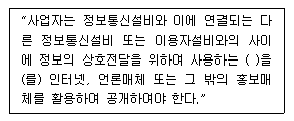
- 이용약관
- 통신규약
- 시설약관
- 기술기준
(정답률: 68%)
82. 다음 ( ) 안에 들어갈 내용으로 적합한 것은?
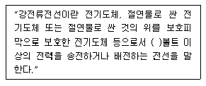
- 110
- 220
- 300
- 600
(정답률: 78%)
83. 다음 중 전기통신사업법 시행령에서 정하는 보편적 역무의 내용이 아닌 것은?
- 유선전화 서비스
- 자가전기통신 서비스
- 긴급통신용 전화 서비스
- 장애인ㆍ저소득층 등에 대한 요금감면 전화 서비스
(정답률: 63%)
84. 방송통신위원회가 기간통신사업자를 허가함에 있어 심사 사항에 속하지 않는 것은?
- 기간통신역무 제공계획의 이행에 필요한 재정적 능력
- 기간통신역무 제공계획의 이행에 필요한 기술적 능력
- 이용자 보호계획의 적정성
- 전기통신기술의 발전계획의 타당성
(정답률: 71%)
85. 다음 중 정보통신공사의 설계도서 보관의무 기간에 해당되지 않는 것은?
- 공사의 목적물 소유자 - 공사의 목적물이 폐지될 때까지 보관
- 공사를 설계한 용역업자 - 해당 공사가 준공된 후 5년간 보관
- 공사를 감리한 용역업자 - 하자담보책임기간이 종료될 때까지 보관
- 공사를 시공한 시공업자 - 당해 공사가 준공된 후 7년간 보관
(정답률: 76%)
86. 다음 ( ) 안에 적합한 것은?
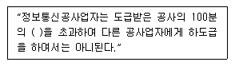
- 20
- 30
- 50
- 60
(정답률: 81%)
87. 방송통신설비의 기술기준에 관한 규정에서 고압에 대한 정의는?
- 직류는 750볼트 이하, 교류는 600볼트 이하인 전압
- 직류는 750볼트, 교류는 600볼트를 초과하고 각각 7000볼트 이하인 전압
- 직류는 750볼트, 교류는 600볼트를 초과하고 각각 3300볼트 이하인 전압
- 교류 7000볼트를 초과하는 전압
(정답률: 75%)
88. 방송통신위원회가 수립하여 공고하는 전기통신기본계획에 포함되는 사항이 아닌 것은?
- 전기통신의 표준화에 관한 사항
- 전기통신의 이용효율화에 관한 사항
- 전기통신의 질서유지에 관한 사항
- 전기통신사업에 관한 사항
(정답률: 44%)
89. 정보통신공사업법에서 발주자로부터 공사를 도급받은 공사업자를 말하는 것은?
- 수급인
- 도급인
- 용역업자
- 하도급인
(정답률: 63%)
90. 정보통신공사에 대한 감리원의 업무범위가 아닌 것은?
- 공사계획 및 공정표의 검토
- 공사 관련 인원의 지휘 및 통솔
- 설계변경에 관한 사항의 검토ㆍ확인
- 공사업자가 작성한 시공상세도면의 검토ㆍ확인
(정답률: 78%)
91. 여러 명의 사용자가 사용하는 시스템에서 컴퓨터가 사용자들의 프로그램을 번갈아가면서 처리해 줌으로써 각 사용자가 각자 독립된 컴퓨터를 사용하는 느낌을 주는 시스템과 가장 관계 깊은 것은?
- on-line system
- batch file system
- dual system
- time sharing system
(정답률: 72%)
92. 다음 중 IEEE 754에 대한 설명으로 옳은 것은?
- 고정소수점 표현에 대한 국제 표준이다.
- 가수는 부호 비트와 함께 부호화-크기로 표현된다.
- 0.M×2E의 형태를 취한다.(단, M: 가수, E: 지수)
- 64비트 복수-정밀도 형식의 경우 지수는 10비트이다.
(정답률: 55%)
93. 구글이 클라우드 시대를 겨냥해서 만든 차세대 태블릿 PC용 OS는?
- 크롬 OS
- tinyOS
- 비스타
- 안드로이드
(정답률: 77%)
94. Spooling을 설명한 것으로 가장 타당한 것은?
- 자료를 발생 즉시 처리하는 방식이다.
- 느린 장치로 출력할 때 디스크 등의 보조기억장치에 저장하고 그 장치를 출력에 연결하는 방식이다.
- 자료를 일정기간 모아서 한 번에 처리하는 방식이다.
- 여러 개의 처리기를 이용하여 여러 가지 작업을 동시에 처리하는 방식이다.
(정답률: 74%)
95. 자기디스크에서 사용하는 CAV 방식의 단점으로 옳은 것은?
- 접근 속도의 저하
- 구동 장치의 복잡화
- 디스크의 무게 증가
- 저장 공간의 낭비
(정답률: 65%)
96. 어떤 명령(instruction)을 수행하기 위해 가장 우선적으로 이루어져야 하는 마이크로 오퍼레이션은?
- PC → MBR
- PC → MAR
- PC+1 → PC
- MBR → IR
(정답률: 63%)
97. CPU 레지스터, 캐시기억장치, 주기억장치, 보조기억장치로 기억장치의 계층구조 요소를 구성하고 있다. 이들 중에서 처리속도가 가장 빠른 것과 가장 느린 것을 순서대로 옳게 나열한 것은?
- 캐시기억장치, 주기억장치
- CPU 레지스터, 캐시기억장치
- 주기억장치, 보조기억장치
- CPU 레지스터, 보조기억장치
(정답률: 71%)
98. 다음 중 가중치 코드(Weighted Code)가 아닌 것은?
- 8421 코드
- 2421 코드
- 5421 코드
- Excess-3 코드
(정답률: 71%)
99. 시스템 동작 개시 후 최초로 주기억장치에 프로그램을 load하는 것은?
- operating system
- bootstrap loader
- mapping operator
- editor
(정답률: 71%)
100. Address Bus선(Line)이 16선으로 되어 있다. 이 때 지정할 수 있는 최대 번지수는?
- 8192
- 16384
- 32767
- 65535
(정답률: 77%)